No Fixed Destination
A map of things I keep coming back to.
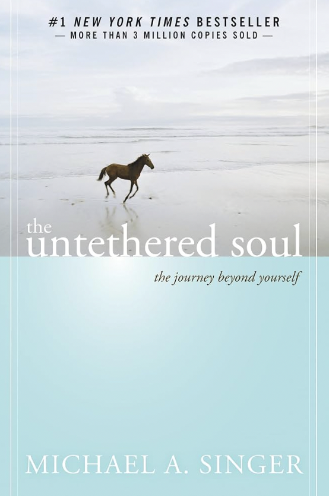
The Untethered Soul
Seoul · Michael A. Singer
My dad recommended this book when I told him I sometimes felt held back by my own thoughts. It made me realize how much of that was coming from my own mind, and I still think about it whenever I feel stuck.
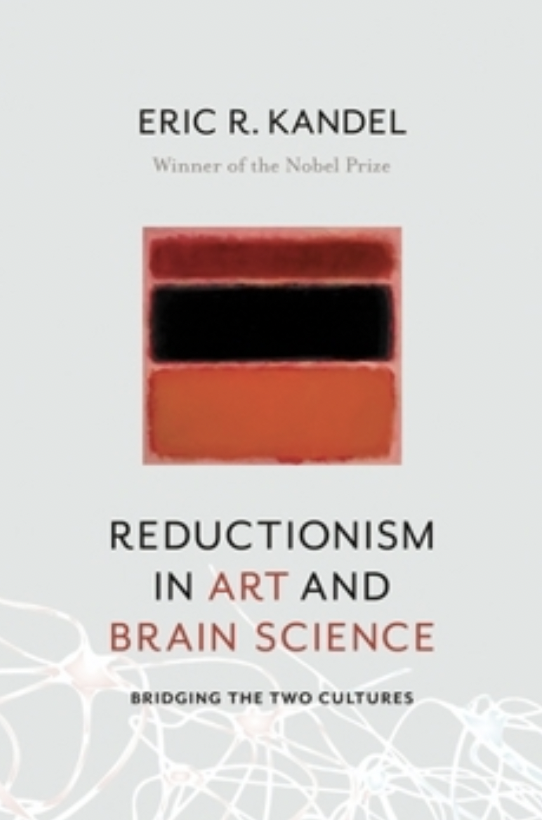
Reductionism in Art and Brain Science
Florence · Eric R. Kandel
Seeing a Rothko painting in Florence made me wonder how something as simple as color could communicate so much emotion. That curiosity led me to this book and made me more interested in the relationship between art and cognitive science.
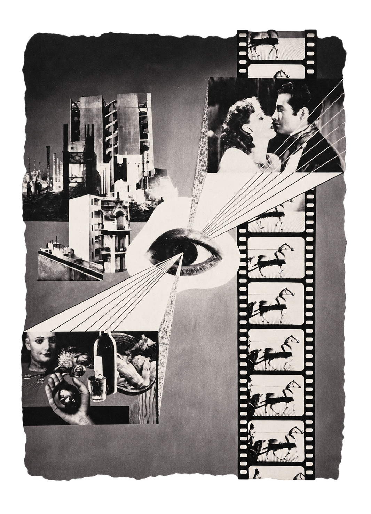
Photomontage
St. Louis · Grete Stern · Kemper Art Museum · Buenos Aires Modern
I came across Grete Stern's work while working at the Kemper for Buenos Aires Modern. I love how she puts together images that don't really belong together but somehow make sense. Her photomontages feel a little strange, almost like dreams, which is probably why I kept looking at them.
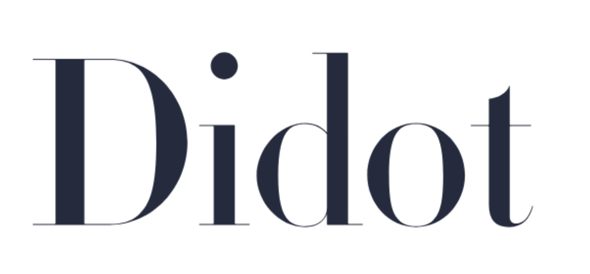
Didot
St. Louis · Typography
One of my favorite serif typefaces. I used it for my final project in Typography II, and I'm using it again for this map. I love how elegant it is without feeling old-fashioned. It's pretty, but still chic.
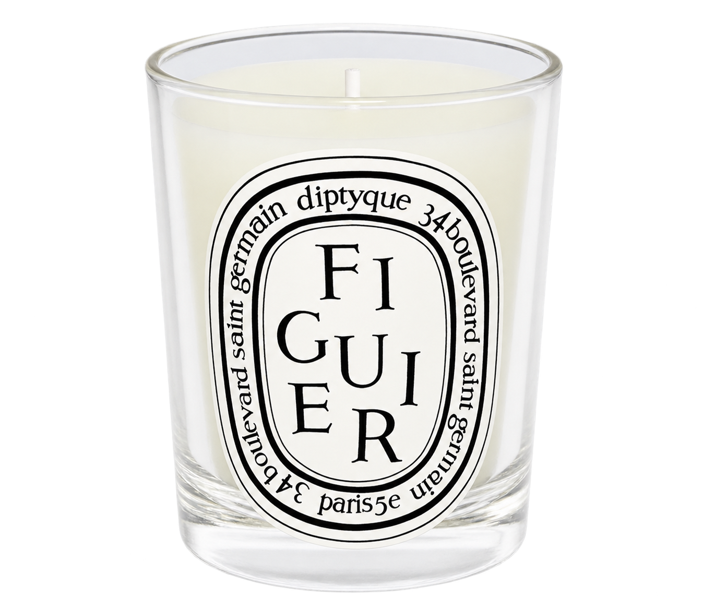
Figuier
Seoul · Diptyque
The scent of my room back home. No matter where I am, it always reminds me of Seoul.
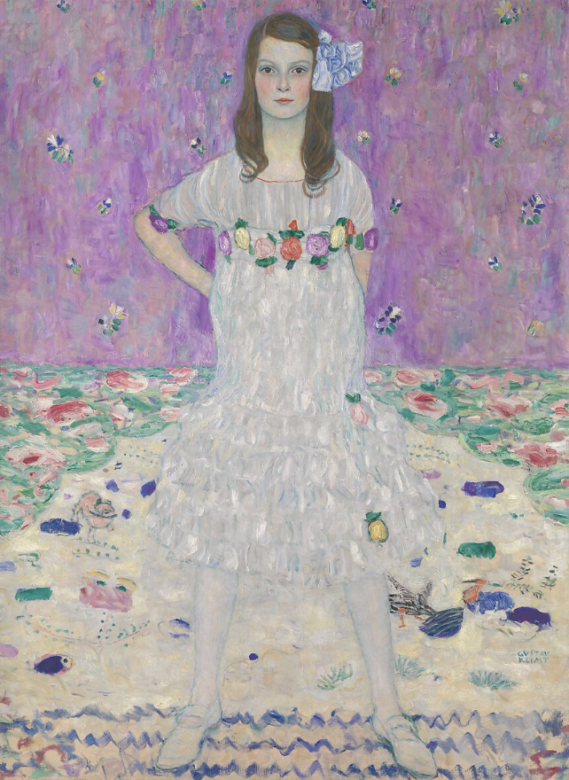
Mäda Primavesi
New York · Gustav Klimt, 1912–13
One of my favorite paintings at The Met. I love how different the coloring is from his more well-known gold paintings, like The Kiss. The pinks, purples, and patterns are so beautiful, and I always stop to look at it when I visit.
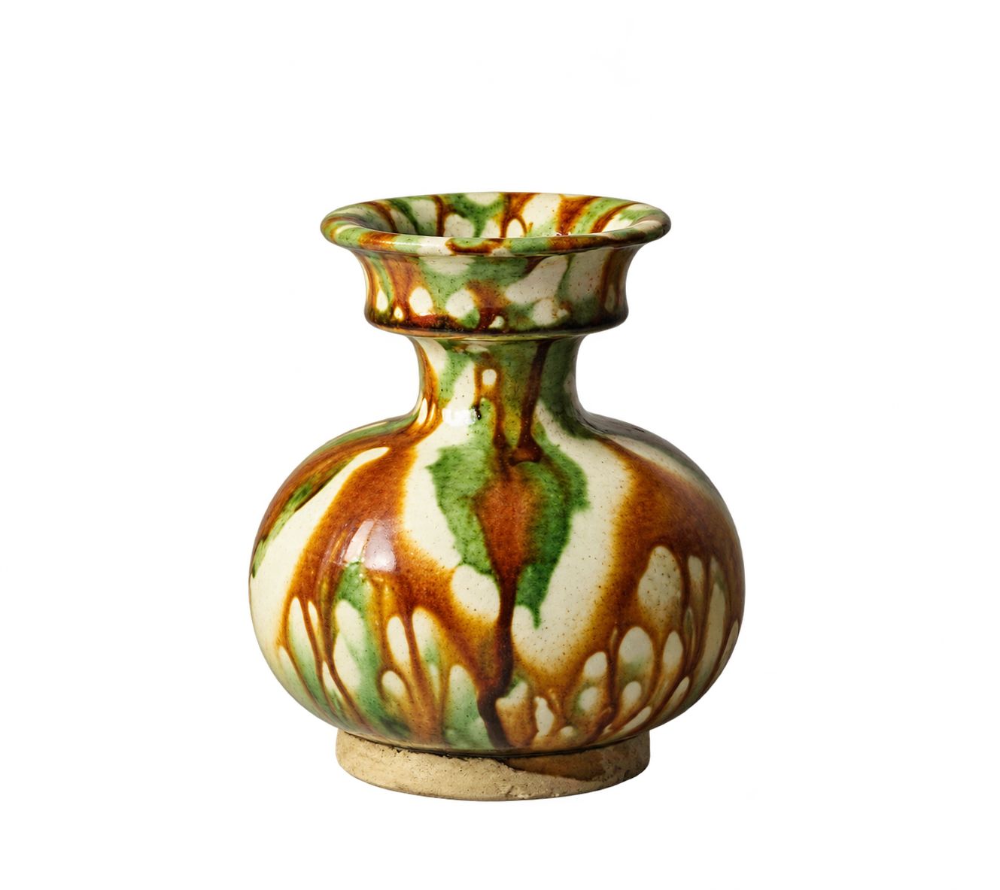
Amber-glazed Marbled Earthenware Cup
New York · Chinese Works of Art · Eskenazi Collection
I came across this cup while working on a Chinese Works of Art project in New York. I was immediately drawn to its colors and marbled surface. What I find interesting about Chinese works of art is that we often know the dynasty rather than the exact year or maker. There's so much history behind an object even when we don't know who made it.
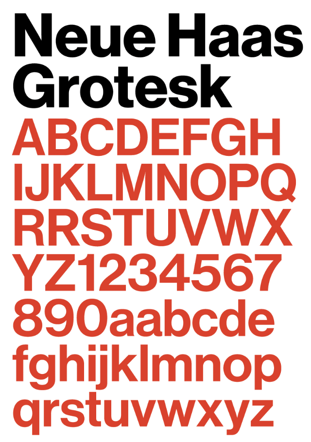
Neue Haas Grotesk
St. Louis · Typography
My favorite sans-serif typeface, which I used throughout my typography classes. I like how simple and restrained it is while still having so much personality. I'm also using it for the text throughout this map.
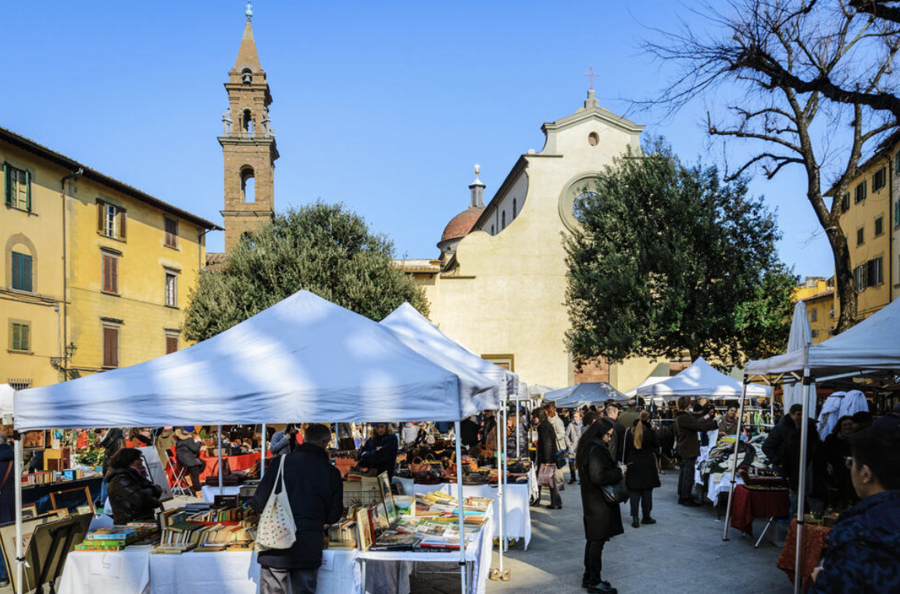
Piazza Santo Spirito
Florence, Italy
One of my favorite areas in Florence. The Sunday markets, the bars and restaurants, and even just walking around the neighborhood made me really happy. I have so many good memories here.
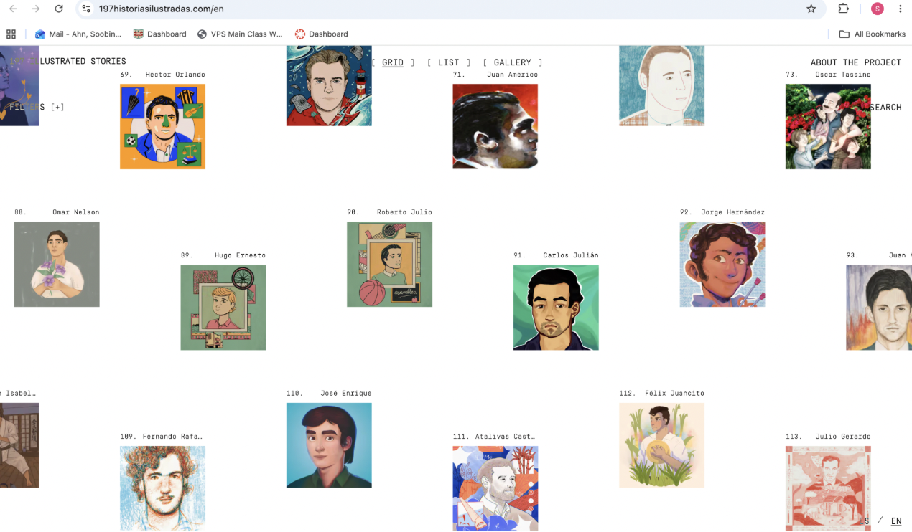
197 Historias Ilustradas
Florence · Digital Inspiration
his website was one of the initial inspirations for No Fixed Destination. I loved how the images were scattered across the page and how I could wander around without following a particular order. It made me want to create something similar, where people could explore different things without a fixed destination. I also love the idea that remembering is a way of keeping something alive.
Visit Website ↗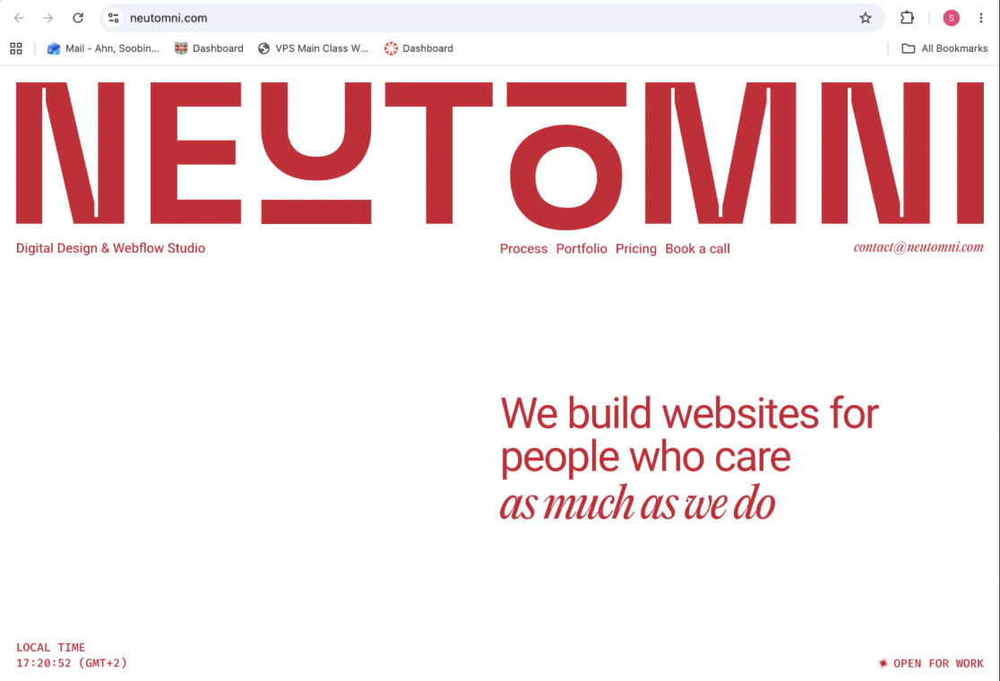
Neutomni
St. Louis · Digital Inspiration
I love the interactive cut-along-the-line detail. It's such a simple idea, but it makes navigating the website feel playful and unexpected.
Visit Website ↗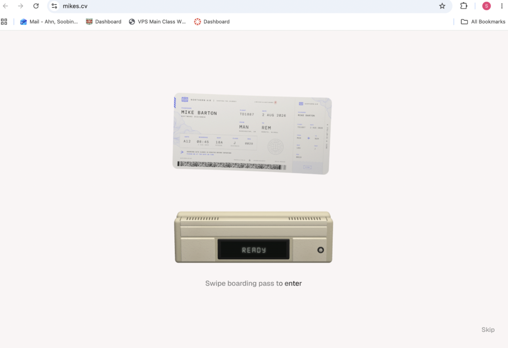
Mike's CV
Florence · Digital Inspiration
The interactive boarding pass caught my attention. I love how the wiping interaction turns something familiar into an unexpected way of exploring a portfolio.
Visit Website ↗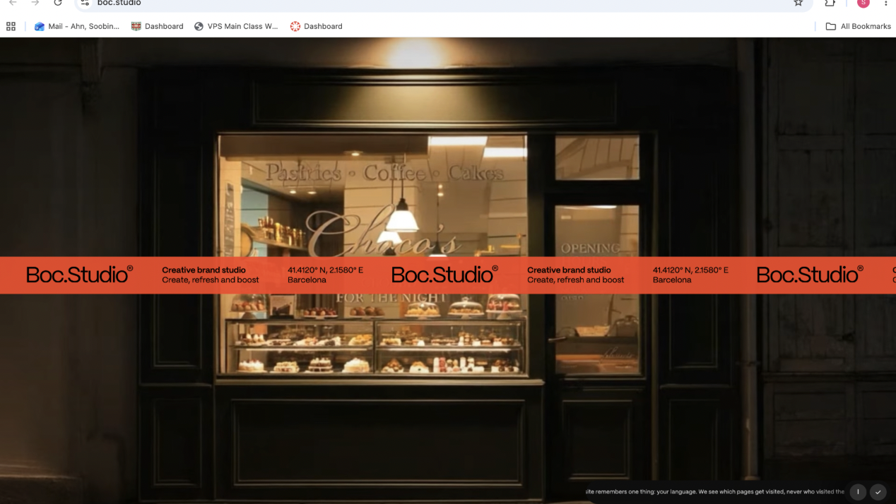
BOC Studio
New York · Digital Inspiration
I love how this branding studio presents its work through a nighttime cityscape, almost like advertisements lighting up buildings in Times Square. It makes the portfolio feel like part of the city.
Visit Website ↗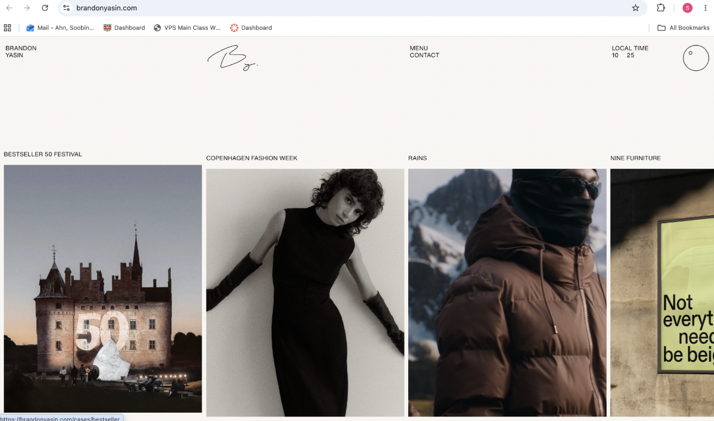
Brandon Yasin
Seoul · Digital Inspiration
I keep coming back to the minimal layout and fashion-inspired visual direction. I like how the imagery and typography are given so much space without needing anything extra.
Visit Website ↗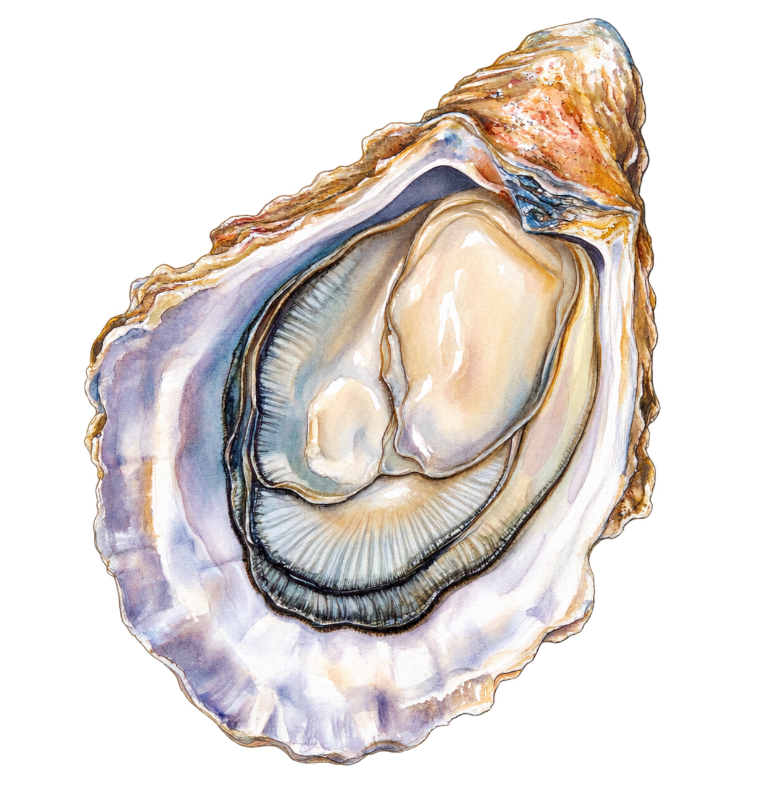
The World Is Your Oyster
New York
A colleague said this to me while I was working in New York, and it has stayed with me ever since. Whenever I'm unsure about what's next, I think about how many possibilities there are ahead.